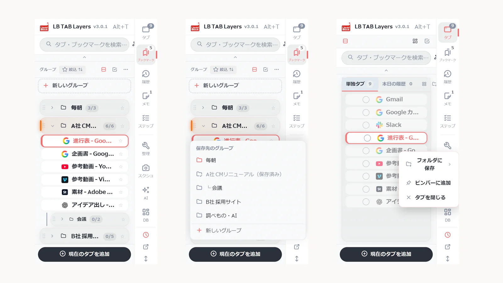
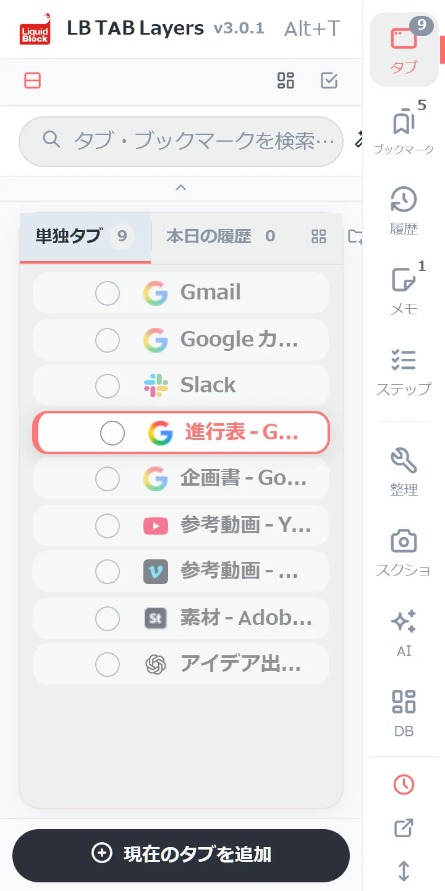
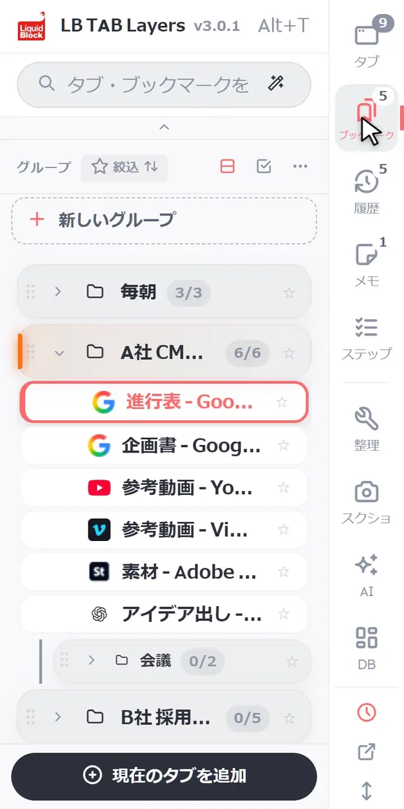
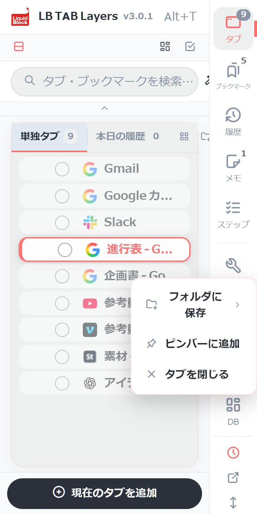

LB TAB Layers は Alt+T（Macは Option+T）で開きます。最初に覚えるのは3つだけです。下の「現在のタブを追加」で今のタブをグループに保存する、グループの ▶ でまとめて開く、■ でまとめて閉じる。保存先は Chrome のブックマークなので、閉じても再起動しても消えません。
LB TAB Layers を入れていただき、ありがとうございます。このページでは、最初の5分で覚えておくと困らないことだけをまとめました。
考え方はシンプルです。タブは「今」開いて作業しているもの、ブックマークは「今後」また使うもの、今日の履歴は「記録」。この3つを、ひとつのサイドパネルで行き来します。
💡 Alt+T（Macは Option+T）で、いつでも開けます。ツールバーの LB TAB Layers のアイコンを押しても開きます。アイコンが見当たらないときは、パズルのアイコンから LB TAB Layers をピン留めしてください。
1. 画面の見方
パネルの端に、縦の列が並んでいます。上から「タブ」「ブックマーク」「履歴」「メモ」「ステップ」。押すと、その画面に切り替わります。アイコンの右上の数字は、開いているタブの数・グループの数などです。
- タブ — 今開いているタブ（まだどこにも保存していないもの）
- ブックマーク — 保存したタブを、仕事ごとのグループにまとめたもの
- 履歴 — 今日見たページ。保存しなかったページも、ここからたどれます
- メモ・ステップ — 作業のメモと、手順のチェックリスト
仕切りの下の「整理・スクショ・AI・DB」は道具です。最初は使わなくて大丈夫です。

2. 基本の操作
グループを作る
「ブックマーク」の画面で、一覧のいちばん上の「＋ 新しいグループ」を押します。名前は「A社 サイト制作」「毎朝見るもの」のように、仕事（案件）ごとにするのがおすすめです。

今のタブを保存する
パネルの下の「現在のタブを追加」を押して、保存先のグループを選びます。すでに入っているグループには「保存済み」と出ます。

開いているタブを、まとめて保存する
「タブ」の画面で、タブの左の○を押すと選択が始まります。保存したいタブの○を続けて押し、下の「グループへ」から保存先を選びます。タブを1つずつグループへドラッグしても保存できます。

▶ でまとめて開く、■ でまとめて閉じる
グループにマウスを乗せると出る ▶ で、中のタブを全部開きます。開いたタブは、グループと同じ名前・色の Chrome のタブグループにまとまります。作業が終わったら ■ で、そのタブグループごと閉じます。閉じても保存はそのまま残ります。

探す
上の検索欄に入れると、開いているタブ・保存したタブ・今日の履歴をまとめて探せます。ひらがな・カタカナの違いや、少しの打ち間違いでも見つかります。

3. 便利な管理のしかた
仕事（案件）ごとに、1つのグループ
グループは「仕事の机」のようなものです。1日の流れは、これだけで回ります。
- 朝 — 今日やる仕事のグループの ▶ で、昨日の続きから始める
- 仕事を切り替えるとき — 今の仕事を ■ で閉じて、次の仕事を ▶ で開く
- 帰るとき — ■ で閉じるだけ。明日また ▶ で戻れます
毎日使うサイトは、ピンバーへ
メールやカレンダーのように毎日開くサイトは、タブやブックマークを右クリックして「ピンバーに追加」。パネルの上に小さなアイコンで並び、1クリックで開けます（12個まで）。ドラッグで置くこともできます。

仕事ごとに、ウィンドウを分ける
グループを右クリックして「新しいウィンドウで開く」を選ぶと、別のウィンドウに、そのグループのタブグループとして開きます。2つの仕事を並べて進めるときや、2枚目のモニターで使うときに便利です。
残しそびれても、今日の履歴がある
全部を保存しなくて大丈夫です。保存しなかったページも、「履歴」から今日見た順にたどれます。大事なものはグループへ、それ以外は閉じてしまうくらいで、ちょうどよく回ります。
🔒 保存先は Chrome のブックマークです。タブを閉じても、Chrome を再起動しても、保存したタブは消えません。ブックマークは外部に送信されません。メモなど拡張の中にあるデータは、設定から書き出しておくと安心です。
もっと詳しい使い方は LB TAB Layers の使い方（1日の流れ） と 初期設定ガイド にまとめています。
よくある質問
Q. LB TAB Layers はどうやって開きますか？
キーボードの Alt+T（Macは Option+T）を押すと開きます。ツールバーの LB TAB Layers のアイコンを押しても開けます。
Q. 保存したタブは、拡張を消すと消えますか？
消えません。保存したタブは Chrome のブックマークに、グループと同じ名前のフォルダとして残ります。メモなど拡張の中にあるデータは消えるので、設定から書き出しておいてください。
Q. 検索では、どこまで探せますか？
開いているタブ、グループに保存したタブ、今日の履歴をまとめて探せます。
Q. 無料で使えますか？
無料で使えます。無料版でもグループは5つまで作れます。今日の履歴・ステップ・ダッシュボード・AI などは PRO の機能ですが、インストールから90日間はすべて使えます。
▶ 実際の操作を動画で見る
サイドバーで、ブックマークとタブをいっしょに管理する様子です。
まずは今の仕事を1件、グループにしてみよう。
Alt+T で開いて、今のタブを保存、▶ で開いて ■ で閉じる。アカウント登録なし · 保存先は Chrome のブックマーク · 90日すべての機能を無料で
Chrome に無料で追加 →